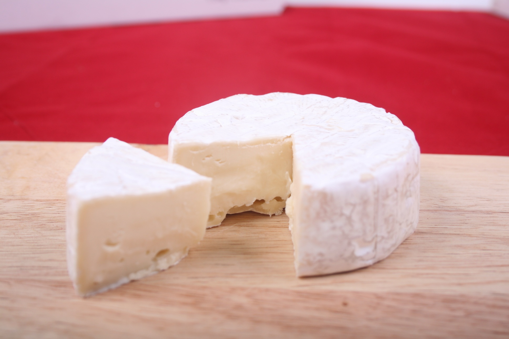

Produtos do Campo

Mel Orgânico
R$ 25,00

Queijo Artesanal
R$ 35,00
R$ 25,00
R$ 35,00
O site Estação da Terra promove a venda de produtos naturais vindos direto do campo. Buscamos incentivar o consumo consciente e valorizar os pequenos produtores rurais.
Este site possui recursos de acessibilidade como aumento de fonte, alto contraste e intérprete de LIBRAS.